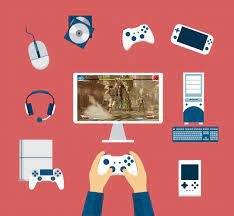

Que es un videojuego?
Daremos inicio con la pregunta sobre que es un videojuego?, un videojuego es un software o juego electronico en el que uno o mas usuarios que en este caso se les llamada jugadores interactuan por medio de un controlador, con un dispositivo electronico que muestra imagenes de video , en nuestra actualidad han existido a lo que se les conoce como plataformas, las cuales puede ser desde una computadora, incluso un telefono celular es considerado tambien una plataforma ya que con el avance de las nuevas tecnologias los telefonos son mas capaces de soportar videojuegos y poder jugar sin necesidad de tener que comprar una plataforma especifica
Etapas de los videojuegos
Como es claro, todo invento o todo proyecto tiene un inicio, el inicio de la historia de los videojuegos no tiene pocos años desde el primer videojuego, por lo mismo podemos llegar a separar toda sus historia en distintas etapas, ya que en comparacion con el primer videojuego de la historia a los juegos mas recientes actualmente o los mas destacados, existe una clara diferencia tanto visual para los jugadores, como compleja para lo desarrolladores que trabajaron para crear el videojuego